project in hci requirements and evaluation
Spring 2018 - 10 weeks
about
The purpose of this project was to provide an in-depth analysis and evaluation of the application, Sleep as Android. Sleep as Android is more than just an average everyday alarm clock. At its core, Sleep as Android aims to wake a person up at the optimal time based on their current sleep cycle. This project required extensive research done in verifying the usability of Sleep as Android. It aims to provide validity to the proposed changes of the application through competitor and user research, user testing, and evaluation of potential redesigns for the key features identified through the research.
Interviews were then conducted to gain a better understanding of the overall lifestyle and sleep habits of the target population. Usability tests were then conducted based on the combined findings from the interview and survey with both existing and new users of the Sleep as Android application. These tests, along with the results of a cognitive walkthrough with an expert user led to the discovery of the proposed changes to the application.
software/resources used

our redesign
The following are the five areas to be redesigned from the Sleep as Android application based on the findings from aforementioned research:
- Tutorial
- Hamburger Menu
- Settings
- Sleep Tracking
- Graphs
Through usability testing and the cognitive walkthrough, both revealed that it inadequately explained how to use the noted features but instead only provided an overview leaving the user unaware of how to use them.
Recommended redesign: discoverable menu that provides “just in time” pop-ups for each setting and option.
Through the same tests, the conclusion was made that it contained too many options, causing the user to become overwhelmed and unable to find what they were looking for in a timely manner.
Recommended redesign: reorganized menu with large headers so that users can narrow down which option they’re looking for.
Having two different settings menus caused confusion in the participants as to which menu offered which options, leading them to become lost in a sea of options.
Recommended redesign: combine the two menus into one and use clear headers and tabs to make it easier to navigate.
Usability test revealed that it was too cluttered with unimportant information while leaving out relevant details such as if the application was tracking the users sleep or not.
Recommended redesign: limit the page to only absolute key features, removing all unnecessary clutter and making it obvious when sleep tracking begins.
Usability testing proved that the graphs were often missing key pieces of information along with units of measure and accurate labels.
Recommended redesign: simplify the graphs, clearly label the axes, organize the page to clearly display user’s data.
tutorial
The original tutorial seemed like a slideshow of potential features that overloaded users with a broad range of topics. We wanted the tutorials to be discoverable so that users would be able to pick and choose what they wanted to learn more about and what they were actually interested in.
original
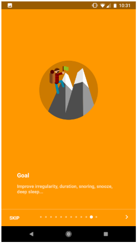 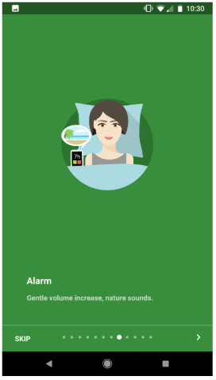redesign
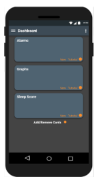 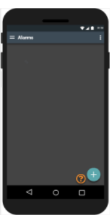 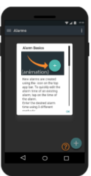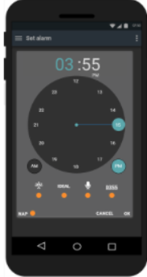
 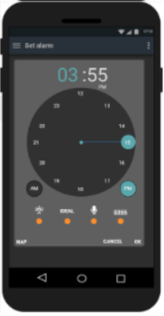
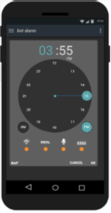
hamburger menu
The hamburger menu was another feature that we wanted to redesign, and one of the main things that we found out about it was that it had too many options. Our initial design focused on making the menu presentable and that users could see all of the options and understand what they do.
original
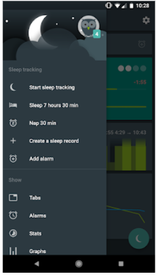 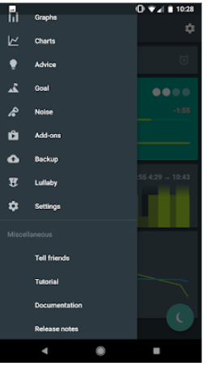redesign
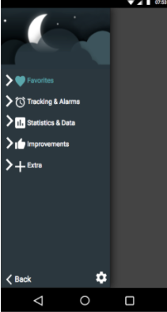 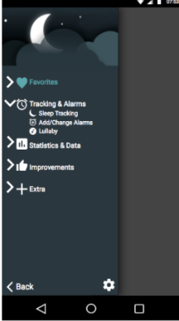alarm settings
The main issue with the current alarm default settings menu was that it was very difficult to find. We decided to use tabs combined it with additional main subheading below that would reveal specific settings based on that heading.
original
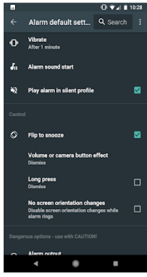 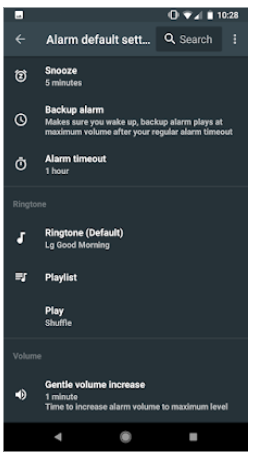redesign
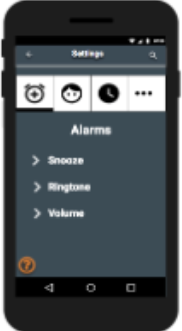 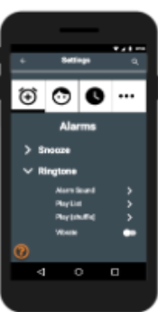 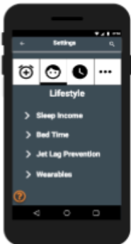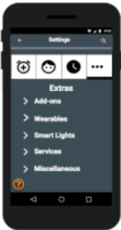 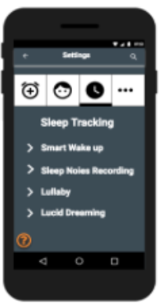
sleep tracking
The biggest issue that we identified was that the screen did not have any user feedback, which confused users to wonder what their phone was even doing.
original
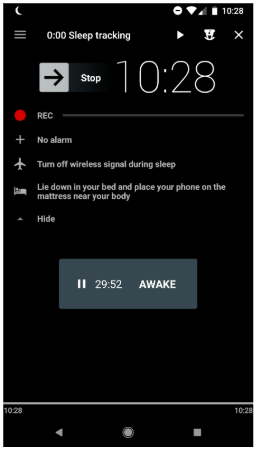redesign
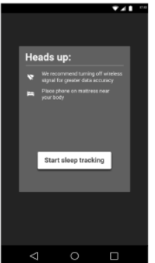 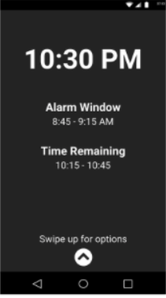 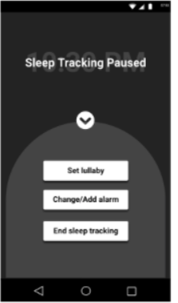graphs
For our final design, we opted for key features such as descriptively and concisely labeling our key sleeping metrics at the top, and getting rid of unnecessary metrics to remove all ambiguity, forcing the user to rate their sleep before proceeding to the main graphs page.